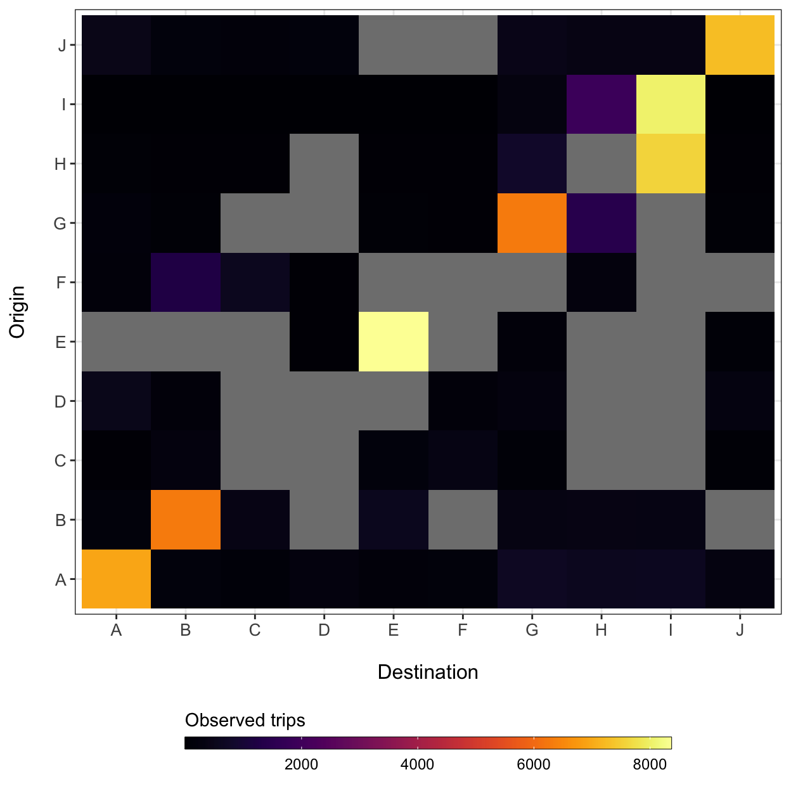
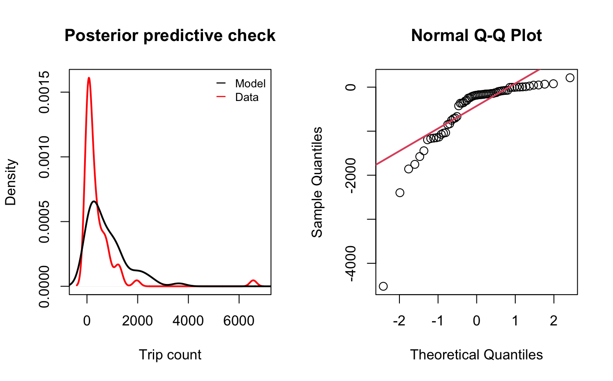
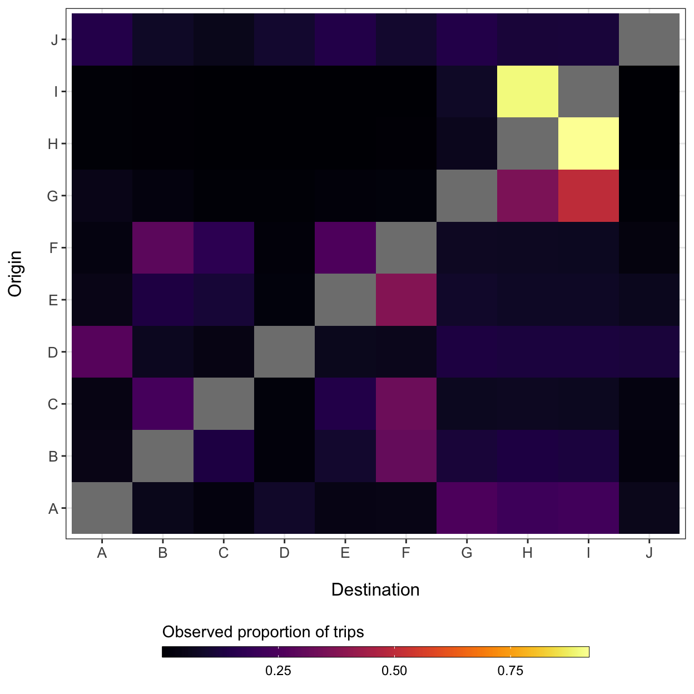

Historically, the gravity model has been used to model connectivity among locations based on the distances among \(i\) origins and \(j\) destinations (\(d_{ij}\)) and population sizes of each location (\(N_i\) and \(N_j\)). A major advantage of the gravity model is that distance and population size are simple covariates that can be obtained in almost any context, allowing a researcher to infer connectivity with little information.
When fitting the gravity model to data, we also need a matrix of observed travel volume (\(M\)). Travel volume is an intentionally vague term here because a mobility data matrix can be populated with a variety of measurements that capture relative amounts of travel among locations. For example, if we are using Call Data Records (CDR) which are measures of mobile phone usage supplied by mobile phone companies, the unit of travel volume is likely to be the total number of person trips per unit time. Or if we are using a travel survey that researchers have collated from questionares given to residents of an area, the measurement of travel volume might be the total number of individuals that reported travelling from \(i\) to \(j\) in the past month.
The actual unit of travel volume is less important when modeling connectivity because the gravity model formula estimates relative travel volume that is normalized across all \(j\) destinations of an origin, so that the rows of \(M\) sum to 1. However, it is important that all \(ij\) cells in \(M\) have the same unit of travel volume per unit time because the model estimates parameters based on relative differences in travel volume.
The rest of this vignette shows an example of how to estimate and simulate connectivity (\(\hat{\pi}_{ij}\)) for all possible \(i \rightarrow j\) travel routes found in supplied data matrices (\(M\), \(D\), and \(N\)).
Before we can fit a gravity model, we must build data matrices from the longform travel data. The utility functions get_mob_matrix(), get_distance_matrix(), and get_pop_vec() can be used to generate data matrices representing travel volume among locations (\(M\)), along with distances (\(D\)) and population sizes (\(N\)). Here we use pre-built matrices from simulated data in the mobiliy_matrices() data object.
M <- mobility_matrices$M D <- mobility_matrices$D N <- mobility_matrices$N
By design, we have added additional stochasticity around trip counts in the movement matrix (\(M\)) and randomly sampled 80% of observed routes to simulate missing observations, which are shown as grey cells in the plot below.
ggplot(data=melt(M)) + geom_tile(aes(x=factor(destination), y=factor(origin), fill=value)) + xlab('Destination') + ylab("Origin") + theme_bw() + theme(axis.text.x=element_text(size=10), axis.text.y=element_text(size=10), axis.title.x=element_text(size=12, margin = margin(t = 15)), axis.title.y=element_text(size=12, margin = margin(r = 15)), legend.position='bottom') + viridis::scale_fill_viridis(option='inferno', direction=1) + guides(fill=guide_colorbar(title='Observed trips', title.position='top', label.theme=element_text(size=9), barwidth=20, barheight=0.5, frame.colour='black', ticks=TRUE))

Gravity model parameters can be estimated using the fit_gravity() function. This function uses the distance among locations (\(D\)) and population sizes (\(N\)) as covariates in the gravity equation, which is fitted to the movement matrix (\(M\)) with a Poisson likelihood link function: \[
\begin{aligned}
m_{ij} &\sim \text{Poisson}\big(\pi_{ij}N_{i}\big)\\
\pi_{ij} &= c_{ij}/\sum_{\forall j}c_{ij} \\
c_{ij} &= \theta \Bigg(
\frac{
N_{i}^{\omega_1} N_{j}^{\omega_2}
}{
d_{ij}
} \Bigg)
\end{aligned}
\] Gravity model parameters are fit through normalized connectivity values (\(\pi_{ij}\)) that scale the Poission likelihood so that it is proportional to the observed trip counts (\(m_{ij}\)). The exponential parameters \(\omega_1\) and \(\omega_2\) are weights that modify the contribution of origin and destination population sizes, and \(\theta\) is a proportionality constant. The denominator of the gravity model, \(d_{ij}^\gamma\), serves as the dispersal kernel function. The fitting function fit_gravity() estimates the posterior distribution of model parameters using Bayesian MCMC inference.
mod <- fit_gravity(M=M, D=D, N=N, n_chain=2, n_burn=1000, n_samp=1000, n_thin=2, DIC=TRUE) #> ::Fitting gravity model for 10 origins and 10 destinations:: #> Using uniformative priors #> Compiling model graph #> Resolving undeclared variables #> Allocating nodes #> Graph information: #> Observed stochastic nodes: 74 #> Unobserved stochastic nodes: 30 #> Total graph size: 1196 #> #> Initializing model #> #> NOTE: Stopping adaptation
The above code fits the gravity model using 4 sampling chains, discards the first 1000 samples as ‘burin in’, and then takes 1000 samples thinning by 2 to give 500 total samples per chain. The DIC=TRUE argument tells the function to calculate the Deviance Information Criterion (DIC).
Running a gravity model on a large number of locations (e.g. \(\gt 100\)) or drawing a large number of samples from posterior distributions (e.g. 10000) may take several minutes. If computation is cumbersome, then the model can run sampling chains in parallel instead of sequentially by specifying parallel = TRUE.
The fitting function fit_gravity() returns results as a coda::mcmc.list() object shown below. The coda::mcmc.list() is a common object class that holds the posterior samples for each parameter and each sampling chain.
str(mod) #> List of 2 #> $ : 'mcmc' num [1:500, 1:7] 35320 35317 35317 35317 35317 ... #> ..- attr(*, "dimnames")=List of 2 #> .. ..$ : NULL #> .. ..$ : chr [1:7] "deviance" "gamma" "omega_1" "omega_2" ... #> ..- attr(*, "mcpar")= num [1:3] 1 500 1 #> $ : 'mcmc' num [1:500, 1:7] 35318 35319 35318 35317 35317 ... #> ..- attr(*, "dimnames")=List of 2 #> .. ..$ : NULL #> .. ..$ : chr [1:7] "deviance" "gamma" "omega_1" "omega_2" ... #> ..- attr(*, "mcpar")= num [1:3] 1 500 1 #> - attr(*, "class")= chr "mcmc.list"
To calculate summary statistics of estimated parameter values, you can supply a fitted model object to the summarize_mobility() function. This function is a wrapper for the MCMCvis::MCMCsummary() function that calculates summary statistics for each parameter across each chain along with convergance diagnosics like the Gelman-Rubin convergence diagnostic and (\(\hat{R}\)) and samples auto-correlation foreach parameter.
mod <- summarize_mobility(mod) mod #> Mean SD HPD2.5 HPD97.5 Rhat SSeff AC2 #> gamma 1.724677e+00 0.01205471 1.699180e+00 1.746843e+00 1.01 927 0.07 #> omega_1 1.381750e+00 0.68366803 4.628563e-01 2.910332e+00 1.05 404 0.32 #> omega_2 3.098592e-02 0.01613333 2.629649e-03 6.193056e-02 1.00 864 0.10 #> theta 1.062420e+00 0.70814989 5.011071e-02 2.456657e+00 1.03 635 0.23 #> DIC 3.532755e+04 2.49634477 3.532475e+04 3.533239e+04 1.01 820 0.16 #> deviance 3.531912e+04 2.49634477 3.531633e+04 3.532397e+04 1.01 820 0.16 #> pD 4.211024e+00 NA NA NA NA NA NA #> AC5 AC10 #> gamma -0.01 0.00 #> omega_1 0.05 0.04 #> omega_2 -0.01 0.07 #> theta 0.02 -0.02 #> DIC -0.06 0.09 #> deviance -0.06 0.09 #> pD NA NA
The check_mobility() function provides goodness of fit metrics and summary plots.
check_mobility(M, D, N, mod)

#> $DIC
#> [1] 35327.55
#>
#> $RMSE
#> [1] 776.6571
#>
#> $MAPE
#> [1] 4.823927
#>
#> $R2
#> [1] 0.9047936Now that we have verified that our model fits the data adequately, we can simulate connectivity values among the off-diagonal locations by using the estimated parameter values from the fitted gravity model in the sim_gravity() function.
pi_hat <- sim_gravity(N=N, D=D, theta=mod['theta', 'Mean'], omega_1=mod['omega_1', 'Mean'], omega_2=mod['omega_2', 'Mean'], gamma=mod['gamma', 'Mean'])
diag(pi_hat) <- NA ggplot(data=melt(pi_hat)) + geom_tile(aes(x=factor(destination), y=factor(origin), fill=value)) + xlab('Destination') + ylab("Origin") + theme_bw() + theme(axis.text.x=element_text(size=10), axis.text.y=element_text(size=10), axis.title.x=element_text(size=12, margin = margin(t = 15)), axis.title.y=element_text(size=12, margin = margin(r = 15)), legend.position='bottom') + viridis::scale_fill_viridis(option='inferno', direction=1) + guides(fill=guide_colorbar(title='Observed proportion of trips', title.position='top', label.theme=element_text(size=9), barwidth=20, barheight=0.5, frame.colour='black', ticks=TRUE))
